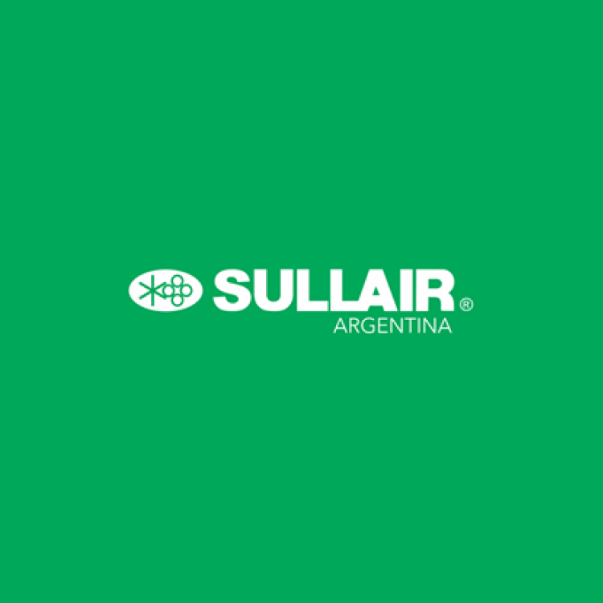
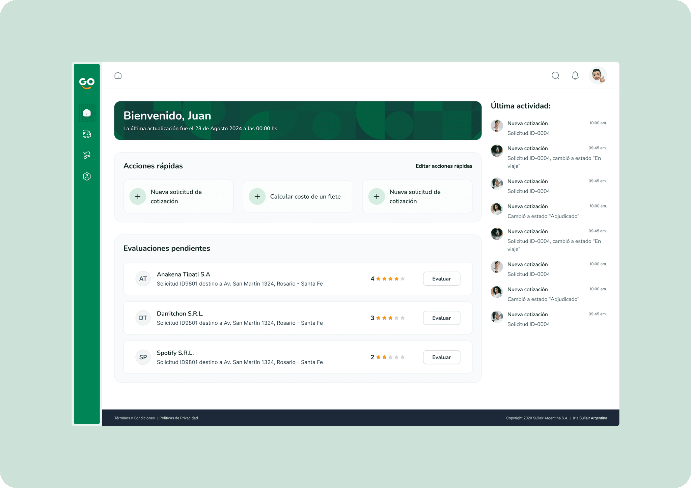
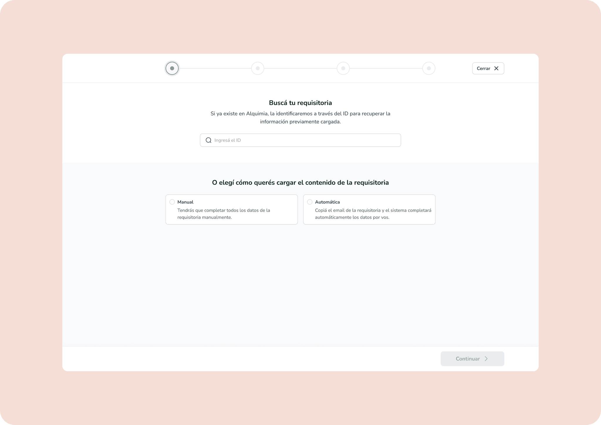
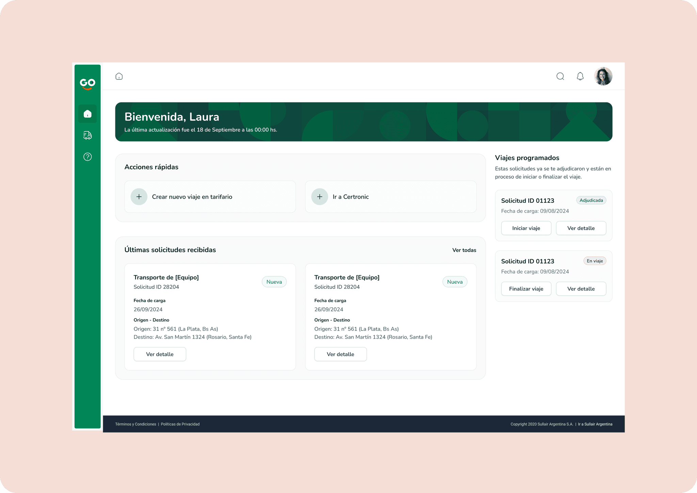
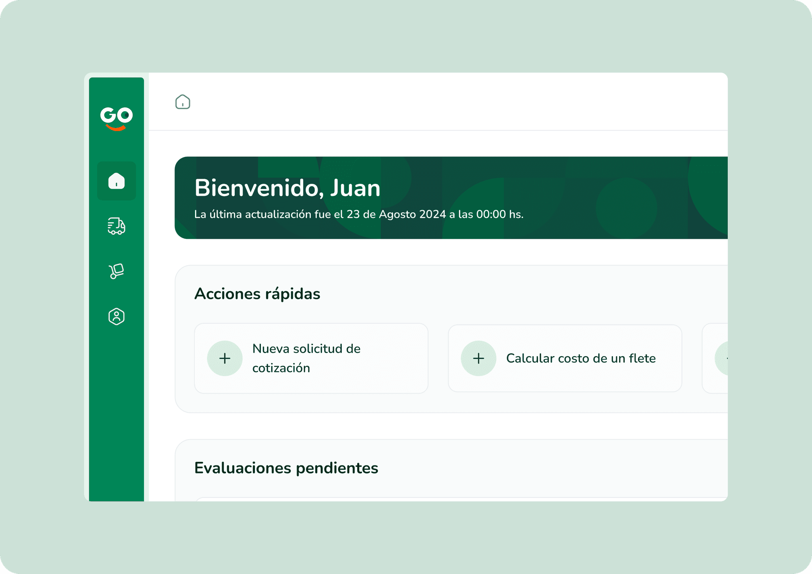

Para Compras
Publicar solicitudes, comparar cotizaciones y consultar su historial desde un mismo lugar.
Sullair Argentina · UX/UI
Un proyecto de 20 semanas para ordenar las solicitudes de cotización y mejorar el trabajo entre Compras y los transportistas.

Sullair Argentina
Durante más de un año trabajé en distintos proyectos para Sullair Argentina junto a un equipo de UX, UI, Desarrollo y PM. Este fue uno de ellos: durante 20 semanas trabajamos en el diseño de un portal para gestionar fletes de larga distancia.
Participé en el relevamiento, la definición de las historias de usuario, la arquitectura de información, los taskflows y los wireframes hasta llegar a la propuesta final de diseño.
01 · El proyecto
La idea inicial era diseñar un cotizador tipo subasta. Los proveedores podrían presentar sus ofertas dentro del portal y Compras podría compararlas sin negociar cada propuesta por separado o seguir conversaciones por email.
¿Cómo podíamos hacer más clara la cotización de un flete y dejar la información disponible para todos los perfiles involucrados?
Publicar solicitudes, comparar cotizaciones y consultar su historial desde un mismo lugar.
Recibir solicitudes, cotizar y acceder a la información necesaria para cada viaje.
02 · Cómo lo trabajamos
Al analizar el proceso encontramos oportunidades que iban más allá del cotizador. El equipo exploró una plataforma más amplia, pero la integración disponible con Alquimia no permitía sostener ese alcance. Volvimos al foco inicial y planteamos un portal preparado para crecer.
Revisamos el proceso de fletes e identificamos necesidades de usuarios internos y externos.
Ajustamos las historias de usuario y las agrupamos en 8 épicas de acuerdo con el nuevo foco.
Usamos card sorting para revisar la navegación y trabajamos los taskflows principales.
Partimos del sistema existente, mantuvimos la identidad visual de Sullair y sumamos los componentes que necesitaba el nuevo portal.
03 · Diseño final
El diseño final contempla una vista para usuarios internos y otra para transportistas. Cada inicio prioriza las acciones y la información que ese perfil necesita para trabajar.




04 · Decisiones de diseño
Permitir que los roles involucrados consultaran las ofertas y el estado de cada solicitud.
Concentrar la publicación, la cotización y el seguimiento dentro del portal.
Consultar su estado, frecuencia de trabajo y calificaciones desde un mismo lugar.
Dar visibilidad a los viajes programados y permitir informar su inicio y finalización.
05 · Resultado
Después de 20 semanas entregamos las historias de usuario, la arquitectura, los flujos y las pantallas en alta fidelidad. El proyecto llegó hasta esa instancia; no cuento con evidencia de implementación ni con métricas posteriores.
Importante: menos tareas manuales y un seguimiento más claro fueron objetivos del diseño, no resultados medidos.
06 · Lo que me dejó
El relevamiento mostró que había mucho por mejorar, pero las restricciones técnicas obligaron a priorizar. Volver al foco inicial no significó perder el trabajo hecho: nos permitió definir una primera versión más realista y dejar una estructura preparada para crecer.